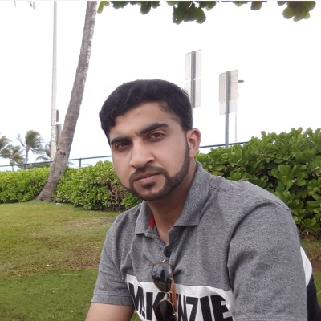

Architecting autonomous navigation systems for real-world robots.

Robotics engineer with expertise in autonomous navigation, perception, SLAM, and commercial service robot deployment.
Production-ready coordination and routing system.
Commercial deployment across international markets.
Research on perception-aware mapping.
Object detection, tracking and fusion.
$ whoami Muhammad Sualeh $ specialization ROS2 Navigation2 SLAM Multi-Robot Systems $ status ACTIVE
GitHub: https://github.com/er-sualeh
LinkedIn: linkedin.com/in/er-sualeh